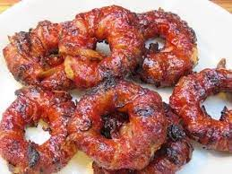

Bacon Cheeseburger Onion Rings

Bacon Cheeseburger Onion Rings
If you love bacon and onion rings, then you'll really enjoy this mouth watering twist these onion rings
have to offer. Each onion ring is filled with cheeseburger filling before wrapped in bacon. These bacon
wrapped appetizers are sure to be a big hit at any party.
Ingredients
- 3 large onions, of your choice.
- 1 cup of shredded colby-jack cheese, or you can use a different cheese of your choice.
- 1 pound of ground beef.
- 2 packages of sliced bacon.
Steps
- Season ground beef with your favorite burger seasonings. Mix seasonings into the ground beef.
- Add the shredded cheese and mix into the ground beef.
- Peel the onions and then slice into thick rings. 3/4" thickness is preferred
-
Separate onion rings, starting from the outside, by pairing with every other ring. First and third
rings will be paired while second and fourth rings will be paired, so on and so forth.
-
Stuff the onion rings with the ground beef mixture by placing the meat inside of the larger onion
ring. Work meat mixture along the inside of the outer ring. Place smaller onion ring inside of the
meat mixture. You should have a layer of meat between the two onion rings when done.
-
Place the meat stuffed rings on a plate and place in the fridge for 15-20 minutes to allow the rings
to set.
-
Using 2 slices of bacon for each ring, begin wrapping the bacon around the ring. Ensure you pull the
bacon and stretch it out a little bit so that it will help hold everything together.
-
Preheat air fryer to 400 degrees F. Place the bacon wrapped rings on the air fryer in a single
layer. Cook for about 14-18 minutes, flipping them over half way through cooking. Feel free to
adjust cooking times to get the bacon to your liking of crispiness.
Back to Main Menu